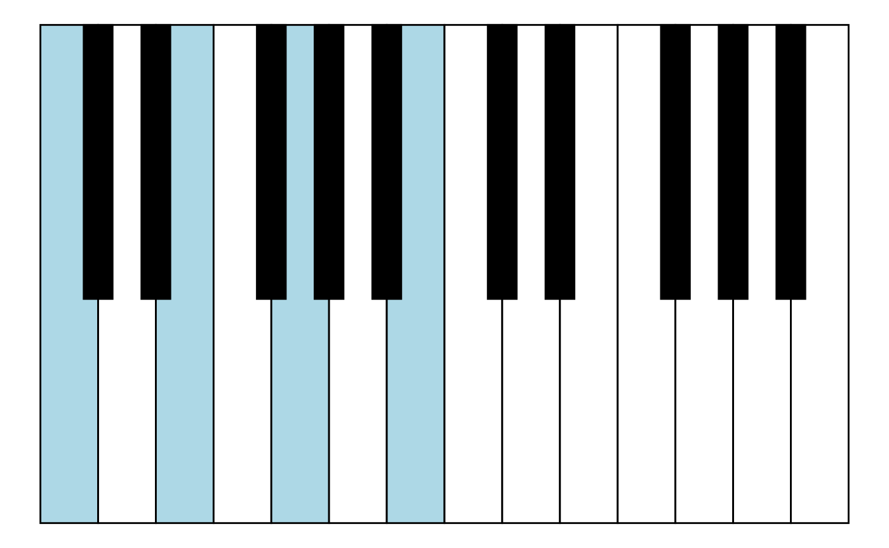
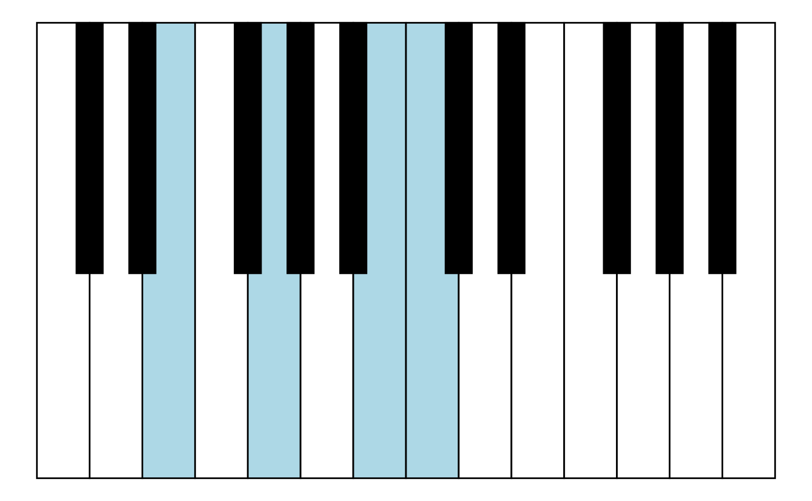
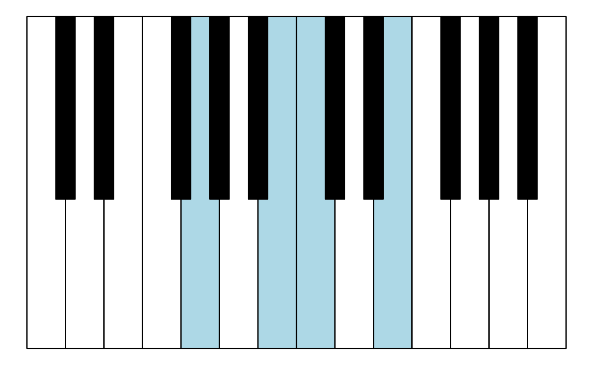

constructing-chords.RmdChord types:
construct_chord_major(root_tone = "C")
#> C chord (major) with tones C, E, G
construct_chord_minor(root_tone = "B")
#> Bm chord (minor) with tones B, D, F#/Gb
construct_chord_major_7(root_tone = "C")
#> Cmaj7 chord (major 7th) with tones C, E, G, B
construct_chord_dominant_7(root_tone = "G")
#> Gdom7 chord (dominant 7th) with tones G, B, D, F
construct_chord_raw(root_tone = "C",
distances_rel = c(3, 4),
chord_type = "minor",
label_suffix = "m")
#> Cm chord (minor) with tones C, D#/Eb, GAny of these can be dealt with, e.g. getting keys for root form, an inversion and both plotted:
Cmaj7 <- construct_chord_major_7(root_tone = "C")
Cmaj7 %>% get_keys_inversion(inversion = 2L)
#> [1] 8 12 13 17
keys_chords %>%
highlight_chord(Cmaj7) %>%
ggpiano()

